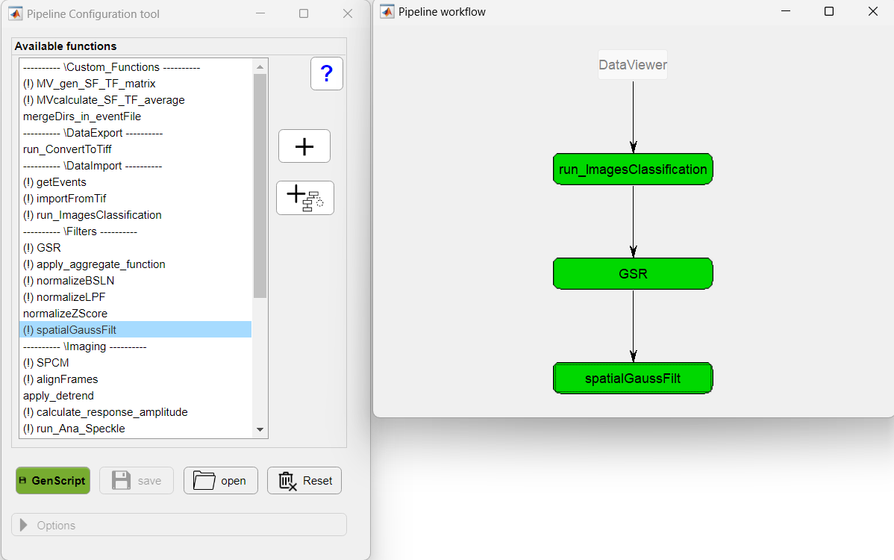
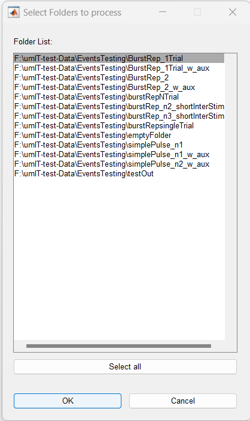
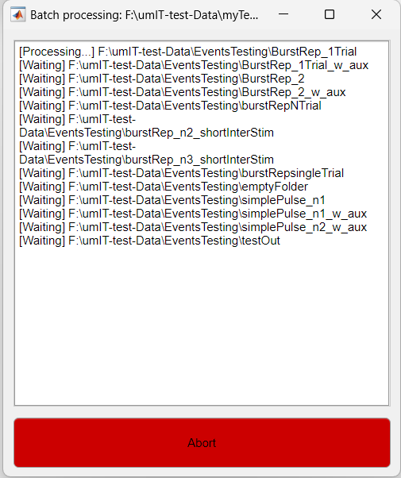

The batch processing options are available in the DataViewer app in File → Batch processing. This feature expands on the Data Processing option from the Utilities tab allowing one to execute a Matlab script across a list of folders.
In the batch mode, a Matlab script is executed sequentially across a specified list of folders. The purpose of this operation is to process data within each of these folders systematically. At the conclusion of the execution in each folder, a log file is generated containing a summary of the execution. This log includes information regarding the changes in the relevant files inside each folder as well as the statement of success or failure of each folder's processing with a copy of the script executed.
There are some pros and cons of using the batch process module in comparison with the Data Processing utility. Here are some to take into account:
Users have the capability to export any data processing pipeline to a .m script and execute it in batch mode. To accomplish this, access the menu option File → Batch processing → Gen. script. This action will prompt users to utilize the Pipeline Configuration tool, where they can create a new pipeline or load an existing one. The pipeline can then be saved to a .m file by clicking on the Gen. script button.

Pipeline configuration tool in Gen. script mode
Note
Note that, when in Gen. script mode, the Pipeline configuration tool includes the available Data
Import functions (e.g., run_ImagesClassification, importFromTif) so the data can be imported in
batch mode. These functions are hidden when using the Data processing utility and are called directly
from the File → Import Raw data menu.
Important
For DataViewer deployed as an executable, it's important to note that the script will be saved with a
.txt file extension. This file can be executed using Matlab's eval function. While it is
possible to edit the file using a standard text editor like NotePad, users should exercise caution.
The available functionality within this executable environment is limited to basic Matlab functions and
those provided by the app, as outlined in the limitations section above. Therefore, any modifications made
to the script should align with these constraints to ensure proper execution.

List of folders to execute the script

Batch processing status window
Here is an example of the log file log_batch_process.txt :
Important
It is assumed that the script is executed in Matlab's current folder. Therefore, DataViewer will automatically change the current directory to each folder during the execution. At the end, the original current directory is restore. Please, take this into account when creating/running your own script.
+----- Batch Processing Log -----------------------------------+
Script name: "myTestingScript"
Folder name: "F:\umIT-test-Data\EventsTesting\burstRepNTrial"
Execution date time: "15:54:09 04/10/2023"
Execution status: "Successful"
+----- File status after script execution ---------------------+
+-------------+------------+
| File | Status |
+-------------+------------+
| AA.dat | Unmodified |
| green.dat | Unmodified |
| normZ.dat | Unmodified |
| testOut.dat | Unmodified |
+-------------+------------+
+----- Error Messages------------------------------------------+
Error using Testing script (line 17)
This is a test error message!
+----- Copy of the script executed ----------------------------+
% Testing script:
% % Modify file
% [dat,md] = loadDatFile('green.dat');
% save2Dat('green.dat',dat,md);
%
% % Create new File
% [dat,md] = loadDatFile('green.dat');
% save2Dat('newfile.dat',dat,md);
% clear dat md
% %
disp('Testing!')
a = 10;
b = 20;
c = a+b;
if ~isfile('green.dat')
error('This is a test error message!')
end
+--------------------------------------------------------------+
The first section of the log displays basic information about the execution, followed by a file status table. The file status table shows which files were modified, deleted or added during the script execution. Only files with extension .dat and .mat appear in this list.
If the execution failed, the Error Messages section will contain the error messages raised during the script execution. Finally, a text copy of the script is stored in the log.
The log file will be appended contiuosly when multiple script executions are performed. The most recent execution is displayed on the top of the file. If the file reaches 1MB of size, the user will be given the option to overwrite the file, keep a backup file or keep using the large file.